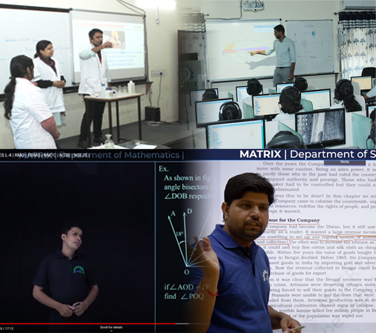

All Courses
Matrix High School has won parents' and students' hearts by scoring high in Sikar. Not only in CBSE boards exams but MHS students has also given excellent ..
Pre Foundation Program
For class 5th to 10th class students "Simply the best gift your child can get before they pass class 10th Boards" "Infinite potential to change the academic learning trajectory of your child in a few years!" Focus of MATRIX Pre-foundation program Preparations for NTSE, IJSO, Pre-RMO, NMTC along with early preparation of IIT-JEE & NEET while balancing school preparation
Online Learning Laboratary
Video lectures for Difficult Subject Video lectures for difficult subjects: The best quality videos will ensure that even if you miss a class due to something important, you don't have to miss the entire chapter. You can easily cover the missed topic in video lecture and continue that regular classes without taking any break. This is very useful in continuation of study program when you miss some classes due to unavoidable reasons. This is also useful when a particular topic/chapter is very tough and you face difficulty understanding it in class
 !-->
!-->
IIT-JEE
Our teachers use digital books and presentations enriched with images, drawings and interactive 3D scenes as well as custom worksheets. Glimpses from one of our regular classes showcasing the technology we use at MATRIX High School
